The purpose of this project was that I needed to debug python code running on a BananaPi device. BananaPi is not that potent when it comes to running IDEs like Eclipse or Visual Studio, so I wanted to try to debug python code that runs on the BananaPi in a remote user friendly environement.
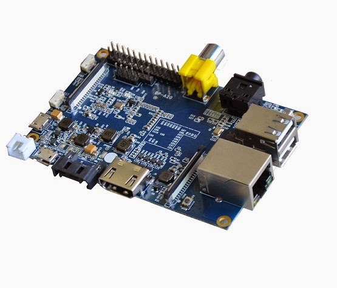
First step on using the bananapi was to flash it with an image. You can find multiple images availabe here.
A image that worked for me is this 2015-11-21-raspbian-jessie-bpi-m3-sd-emmc.img.
I tried to flash around 3 images(2016-07-12-raspbian-lite-bpi-m3.img, 2016-07-01-ubuntu-mate-16.04-Xenial-gpu-mpv-bt-nodejs-beta3-bpi-m3-sd-emmc.img,
2016-07-10-ubuntu-16.04-xenial-minimal-preview-bpi-m3.img) before using a Raspbian image, none of them worked, strange.
To write the image on the SD card I used Win32DiskImager from here, it's pretty straight forward.
A problem I encountered was when I tried to write another image on SD with an image already on it. To reset the SD to it's original size and structure I used the following commands:
DISKPART
LIST DISK
SELECT DISK #nr (I have only a HDD so it was 1 on mine)
CLEAN ALL
CREATE PARTITION PRIMARY
SELECT PARTITION 1
ACTIVE
FORMAT FS=FAT32 QUICK
ASSIGN
EXIT
This mainly will clean the SD card and QUICK format it as FAT32. This was my first solved difficulty.
So now I got to boot the BananaPi. Next step was to install everything needed on my Windows machine.
Note: From now I'll refer to the Raspbian image on the BananaPi as "PI" and to the Windows machine as "PC".
For subjective reasons, considering that I worked on different ocasions with Eclipse I used Eclipse Neon from
here as IDE.
For Python development on Eclipse I used PyDev plugin and for Remote connection I used RSE(Remote Systems Explorer) plugin.
Eclipse -> Help -> Install New Software
add "http://pydev.org/updates/" see below
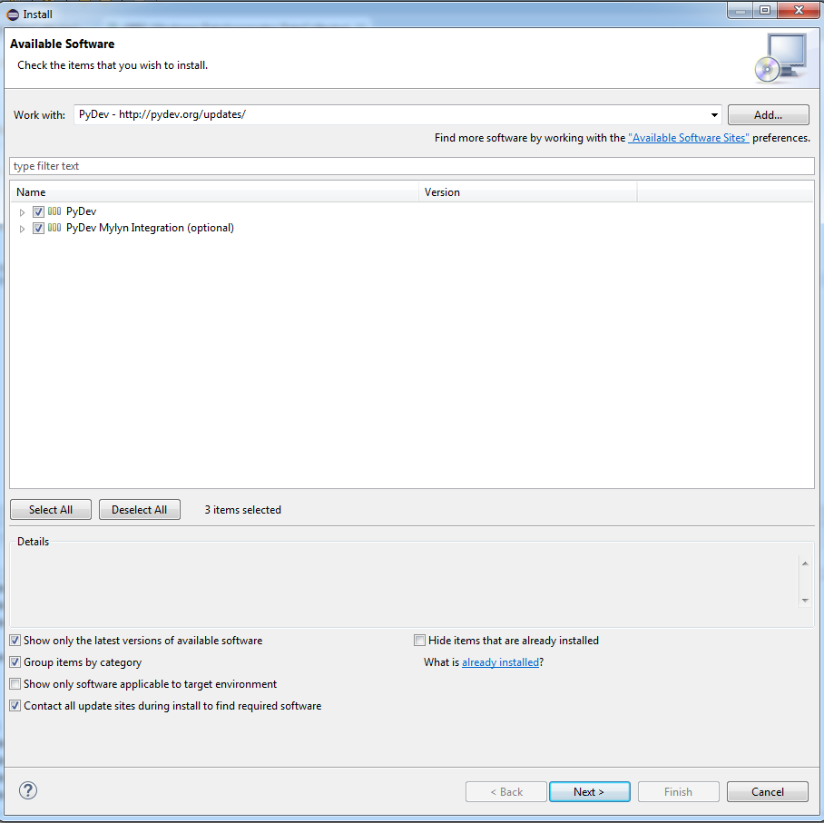
Eclipse -> Help -> Install New Software
Select "Work With all available sites" and in the search box type "remote" so you can easely find the RSE plugin.
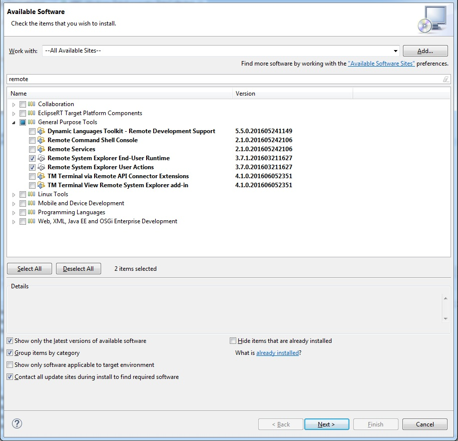
So now we will have in Eclipse 2 new Perspectives:
PyDev perspective:
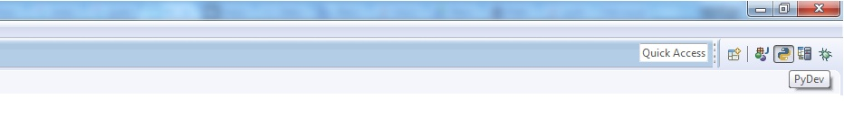
RSE perspective:
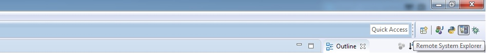
Now we need to connect PC with PI dvice.
To remoteley connect from PC to PI open RSE perspective, and there you'll have access to a "Remote System" tab like in the photo:
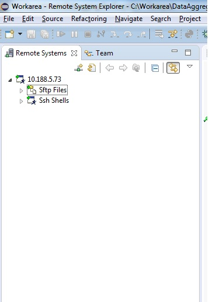
In case the connection is not created automagically, as on my side, you need to create it manually.
To create the remote connection create a new connection, type "SSH only".
The IP will be the IP of the PI device.
I have no extended Linux experience but it's quite straight forward to create a new User on the Linux machine or use an already created one. I created a new one because this new
remote connection automagically created on my side used the username "LAPETRE" so I created this user also on Linux machine.
If the connection succeded, the folder structure should appear as in PI device.
There, in the PI device, you need to copy the pysrc folder of the PyDev eclipse plugin. On my machine this folder installed on path:
c:\Users\lapetre\.p2\pool\plugins\org.python.pydev_5.1.2.201606231256\pysrc
In RSE Perspective you'll see a tab called "Remote Shell", if it's not there you can add it with Eclipse -> Windows -> Show View -> Remote Systems there, select "Remote Shell".
In the Remote Shell tab you can create a remote connection with the device like in the picture below:
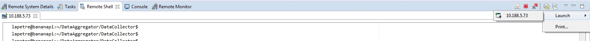
This is a SSH connection, you can test it by navigating in the folder structure on the remote device.
On the PI you don't need to do much configuration, you only needed to create the user for remote connection,
step mentioned above, also you need to copy the pysrc folder of the PyDev eclipse plugin, step also mentioned above.
Beside this you need to configure pydev_file_utils.py like in the image below:
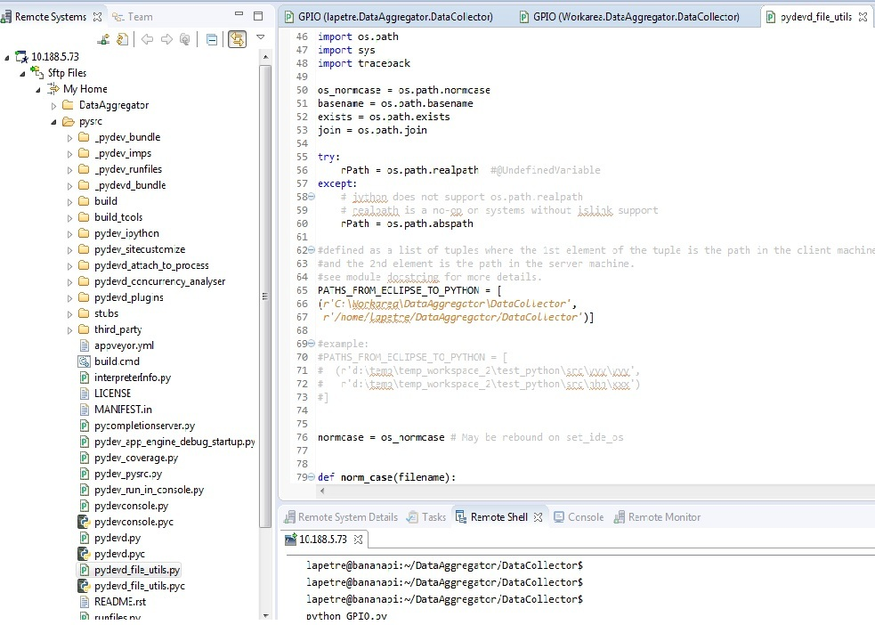
On my side this was the mapping of the source files.
'/home/lapetre/DataAggregator/DataCollector' from the PI is mapping to 'C:\Workarea\DataAggregator\DataCollector' from the PC.
I created a small script called GPIO.py on my local address: C:\Workarea\DataAggregator\DataCollector\GPIO.py with this code in it:
import sys
sys.path.append(r'/home/lapetre/pysrc') # this is the PATH of the pysrc from the PI
import pydevd
pydevd.settrace('10.188.5.67') # this is the IP of the PC
import os
import platform
You need to go to the RSE Perspective and create the source file. I did it like so:
On the "Remote System" tab I created a Folder named "DataAggregator". Right click on it and press "Export From Project".
Check the project that you need to be synced(photo below):
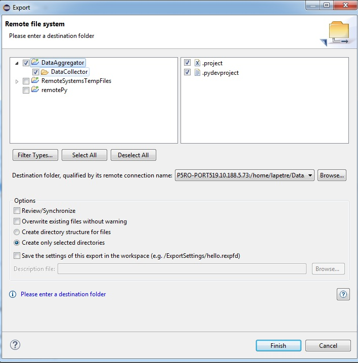
To start the debug session you need to go to PyDev perspective and there you'll see a button for starting the Python server on the PI device, like in the image below:
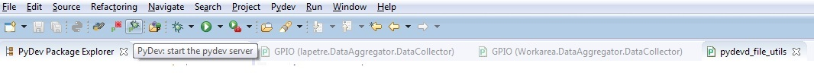
If you don't find the button there you can add it by going to Eclipse -> Windows -> Perspective ->
Customize Perspective Go to "Action Set Availability" there you need to check the "PyDev Debug" checkbox.
After the server is started you can go to "Remote Shell" tab, launch the Remote Shell as descibed on previous steps and there use command: "python GPIO.py" to run remotly the code.
You can add breakpoints to it and debug it step by step.
This should be displayed on the Remote Shell:
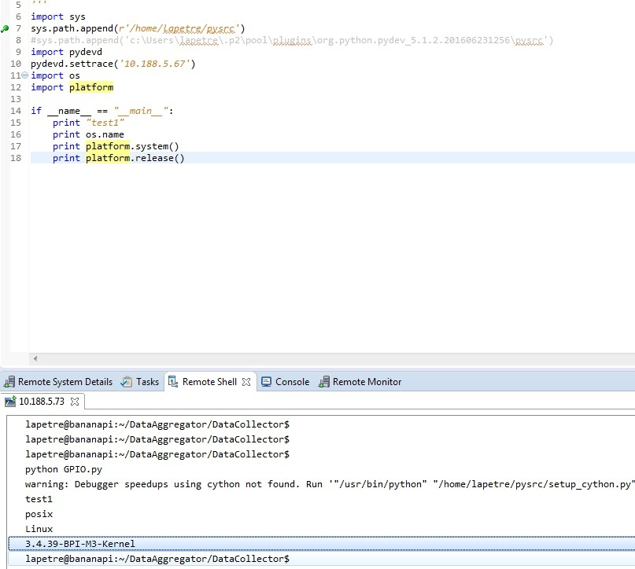
Some additional notes:
* Your code from the PI and from the PC should be always in sync.
If you need some guidance in engineering field or you're seeking for some help don't hesitate to write me.